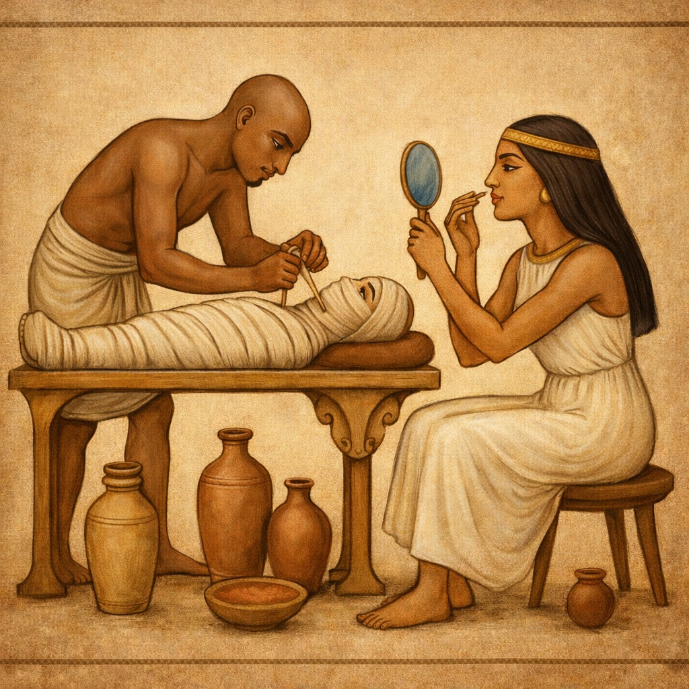
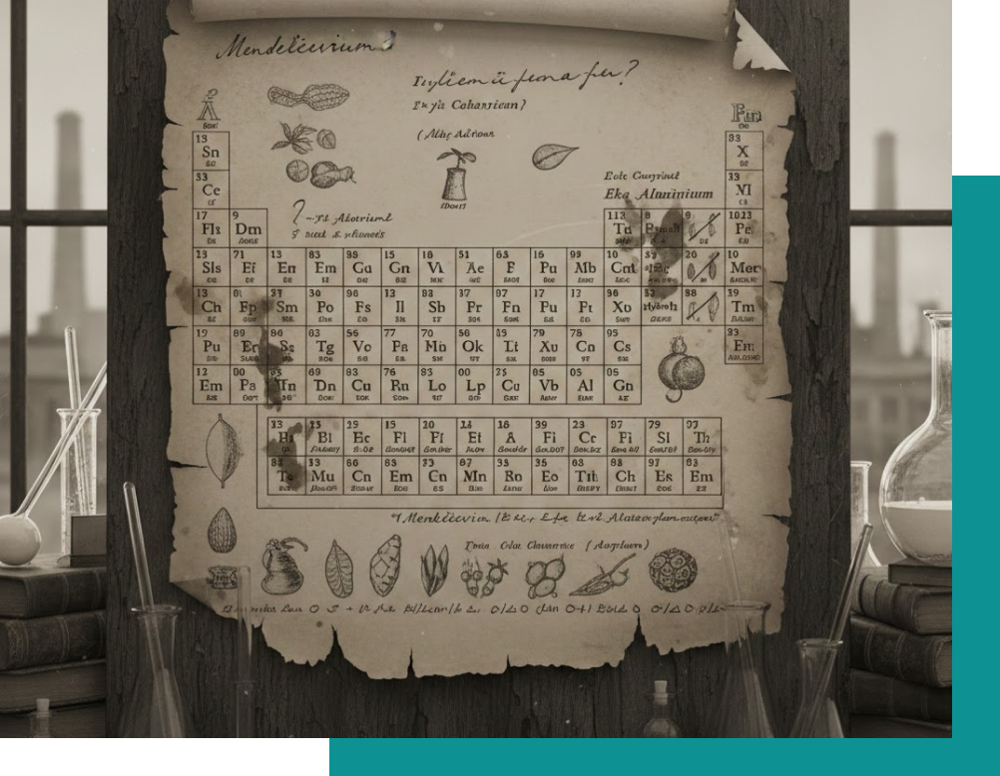
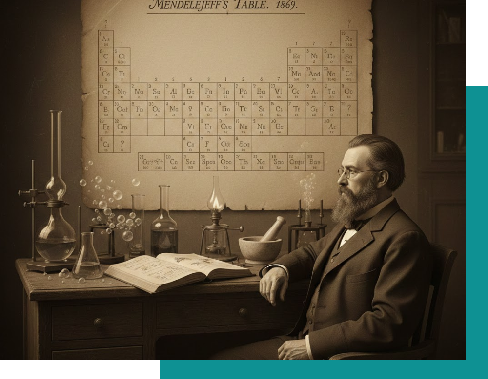
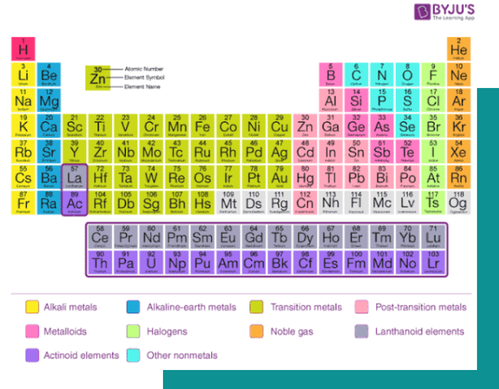

From ancient discoveries to modern breakthroughs, chemistry has shaped our world in extraordinary ways. Explore how ideas, experiments, and scientists across time transformed this science.
Chemistry started thousands of years ago with people experimenting through daily life. Ancient civilizations discovered metals, created dyes, invented medicines, and developed early chemical techniques—long before chemistry became a science.

Egyptians developed preservation techniques using salts, oils, and resins, and created early cosmetics and pigments.
This era focused on practical uses—medicine, metalwork, dyes—not scientific explanation yet.
The 17th and 18th centuries transformed chemistry into a real science. Robert Boyle defined the scientific method, Antoine Lavoisier discovered oxygen and modern naming systems, and early laboratories began appearing with glassware we still recognize today.
Robert Boyle promoted experimentation, observation, and measurement in chemistry, moving the field away from alchemy and toward a scientific approach.
Dmitri Mendeleev’s periodic table (1869) visually changed chemistry forever. Elements were arranged by patterns and properties, revealing hidden relationships. Early diagrams were hand-drawn, colorful, and full of scientific symbols.



During the 20th century, chemistry advanced faster than ever. New tools like spectrometers and electron microscopes helped scientists look deeper into materials. This era also gave birth to synthetic plastics, modern medicines, and highly controlled laboratory techniques. Chemistry became cleaner, more precise, and more technology-driven.
New synthetic materials like plastics changed daily life — from packaging to electronics and industry.
Chemical research led to important medicines, vaccines, and treatments that improved global health.
Modern tools such as spectrometers, electron microscopes, and advanced glassware made experiments more accurate and reliable.
Try these fun questions and see how much you know about chemistry!
From ancient alchemy to modern laboratories, chemistry’s visual history reveals how humans learned to understand, transform, and shape the world around them.